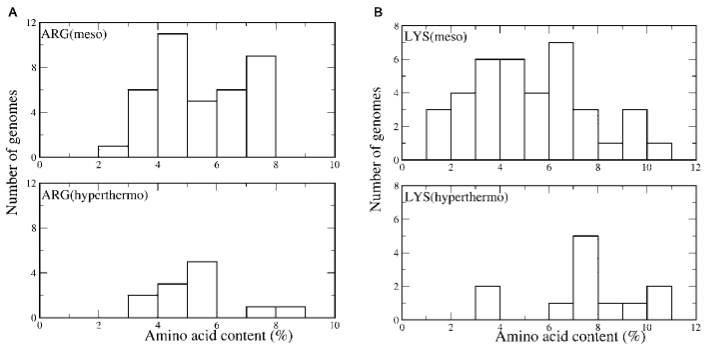

Is Side-Chain Entropy an Important Factor in Protein Folding?
Joshua Ballanco
Abstract
Protein folding is a thermodynamic process which involves energy contributions from forces that favor the folded state and other forces that favor the unfolded state. When the balance of these forces tips in favor of the folded state, a protein will fold spontaneously into a unique conformation representing a thermodynamic minimum. The difficulty in predicting just how, and when, a protein will fold stems from a fundamental lack of knowledge about the forces involved. This is especially true in the case of the conformational entropy of amino acid side chains (side-chain entropy).
Because of the difficulty associated with either directly measuring side-chain entropy or calculating its value from molecular simulations, there is uncertainty as to the effect it has on protein folding. Amino acid side chains range in size and flexibility, and some of the longer side chains contain polar or even charged groups. It’s been proposed that side chains might counteract a loss of entropy by gaining new interactions with other amino acids upon folding. Additionally, the hydrophobic residues commonly found in the core of a folded protein are not the most flexible, and so they will not be affected as significantly by the corresponding space constraints.
On the other hand, buried residues will lose some degree of side-chain entropy. Even though the cores of proteins rarely represent a closest-packed configuration, the side chains of long, charged residues found in internal salt bridges will undoubtedly be restricted in their motion. Furthermore, it is now understood that what is commonly referred to as the "native protein structure" is actually an ensemble of closely related structures. It is possible that side-chain entropy may not be important in determining the global fold of a protein, but may be vital in understanding the dynamics associated with protein function.
In this paper I will look at a variety of experiments which approach the question of side-chain entropy from differing perspectives. A first series of approaches involves investigating the structure and sequence of natural proteins, specifically focusing on side-chain entropy. An alternative approach is to perform de novo protein design either using or neglecting side-chain entropy in the calculations. Both of these approaches are, necessarily, indirect, and each leads to a different conclusion. I will look at the results in context, and discuss whether or not a real controversy exists. Finally, I will propose a course of investigation which might shed more light on the role of side-chain entropy in protein folding.
- Topics
- Thermodynamics
- Protein Folding
- Statistical Mechanics
- Molecular Dynamics
- X-ray Crystallography
- de novo Protein Design
Introduction
Proteins are the work-horses of biology. They are responsible for the vast majority of the biochemical processes that take place in living organisms, and consequently there is keen interest in understanding how they function. Normally, this would be a question of brute-force experimentation, approaching and investigating proteins one at a time. Two aspects of proteins, however, make this a problem that is tantalizingly close, and yet still frustratingly far, from a complete solution.
The first useful aspect of proteins is the relationship between their structure and their function. Knowing a protein's structure goes a long way toward understanding how it might function. This is particularly important when developing pharmaceutical agents to treat disease. Second, a protein's structure is completely determined by its amino acid sequence and the interactions between that sequence and the protein's environment, and the sequence can be determined from available genetic data. This was originally shown in 1961 by Anfinsen[14] in his work with ribonuclease. This notion, of 3-dimensional structure data encoded in a 1-dimensional array of elements, has been verified for proteins in all but a few rare cases.
Thus, since knowing a protein's structure was already more than half the battle, and because it should be possible to determine that structure with readily available information, work began almost immediately on elucidating the mechanism that drives proteins to form their unique structures. This work has been ongoing for the 47 years since.
Shortly after Anfinsen's discovery, Brandts proposed a two-state model for protein folding where a protein exists in an equilibrium, D \rightleftarrows N, between the denatured and native state[6]. This two-state model of protein folding is still the prevailing accepted model for folding, and it has some interesting implications. One of the first implications was recognized by Levinthal in 1968, and has since become known as Levinthal's paradox.
Essentially, what Levinthal realized was that Brandts' two-state model implied an absence of long-lived or marginally stable conformations. In other words, the denatured protein, which is essentially a random coil, must find the single lowest energy conformation from all of the possible conformations in one step. Levinthal's rough calculations implied that a robust search of all possible conformations would require more than the age of the universe to complete yet, paradoxically, proteins fold on a millisecond to second time scale. Obviously, proteins do not randomly sample conformation space. Instead, there must be a driving force that guides a denatured protein, no matter its starting conformation, toward the native state.
This understanding of Levinthal's Paradox led Dill to propose the concept of the folding energy landscape as a funnel[7], which has since become an iconic symbol of the protein folding problem. The funnel captures the essence of the relationship between energy and conformational space. At high enough energies, proteins are free to explore all conformations, and are therefore "denatured" (in fact, the "denatured" state allows for some fraction of protein molecules to explore a native or native-like conformation, but this fraction is small enough to be inconsequential). As the energy of the system is lowered, molecules with conformations near the center of the funnel will simply decrease in energy. However, those along the sides of the funnel will be steered toward more and more native-like conformations. In this way, Levinthal's paradox is resolved, since all the molecules of a protein, regardless of their starting conformation, will converge on a point in conformation space as the energy is lowered.
Dill's funnel also captures another important aspect of protein folding: entropy. At any given energy, the volume of conformation space which remains inside the funnel corresponds to the conformational entropy of the protein. As a protein works its way down the ever narrower funnel, its entropy is decreasing. In order to offset this effect, the folded state of a protein must contain a host of favorable interactions. These will be the same sorts of interactions which define the funnel in the first place, and thus the problems of determining protein folding pathways, protein unfolding pathways, and native structures are all linked.
Ultimately, the question of entropy's effect on protein folding is a rather complicated one. Entropy is, unlike enthalpy or potential energy, an ensemble property. That is, it cannot be determined by looking at a single folded molecule, but rather depends on how many different folds are possible for a given molecule at a given energy[11]. This poses a significant problem in the calculation of entropy from molecular dynamics experiments. An exact calculation of the entropy of folding (∆Sfold) would require not only enumerating all of the possible native-like conformations accessible to a folded protein, but also to enumerating all of the possible denatured protein conformations. While the former is merely an extremely computationally intensive problem, the latter is intractable. A number of techniques have been developed to provide good estimates for this value, but even some of these techniques are prohibitively difficult.
Entropy is also not very easy to separate into component contributions in the same manner as enthalpy or potential energy[2]. Where two hydrogen bonds in a protein would be expected to have twice the stability of a single hydrogen bond, the same cannot be said for the entropy of two side-chains. This makes it difficult to attack the problem of side-chain entropy with a piecemeal approach without making certain assumptions. This also means that directly measuring the contribution of one component of a protein to the protein's entropy via experimental methods is practically impossible.
In particular, free energy, a term which captures both the potential energy of a protein and its entropy, depends on quadratic and higher order terms of the potential energy[3]. If we can integrate the system from absolute zero to a given temperature, a technique known as Thermodynamic Integration, then these higher order terms become temperature derivatives of singular potential energy contributions. In this way, it is possible to separate free energy into contributory components, but only along certain informative paths.
To fully understand the contribution of entropy, specifically side-chain entropy, to the process of protein folding creative approaches are needed. Below, I will look at two different, yet complementary, approaches to this question. First, as noted above, the forces that govern the process of protein folding are the same forces that determine the native structure of a given sequence of amino acids. If we look at the amount of side-chain entropy in native protein structures, we should be able extrapolate the relative importance of side-chain entropy in the folding process. This can be accomplished either by calculation of the side-chain entropy for known structures, or by analyzing proteomic sequences with an eye toward an amino acid bias toward side-chains with more or less degrees of freedom.
Another means of assessing how much side-chain entropy participates in protein folding is by recreating, in a sense, protein evolution. Evolution is restricted by the physics of protein folding, and so it should favor certain amino acid sequences over others because they contain the right combination of physical properties to fold to the needed structure. By attempting to design proteins from scratch, we can investigate which aspects of amino acid physics are important by either including or excluding them in the selection process. If the design algorithms come to a solution which is close to the one resulting from natural evolution, we can assume that the algorithm contains the physical properties important for folding.
Side-Chain Entropy in Naturally Occurring Proteins
In holding with a classic scientific tradition, we can listen to nature and learn what she has to tell us. In this case, that means gathering information about naturally occurring proteins and subjecting this information to analytical techniques that might reveal something about the role of side-chain entropy. This can be an especially fruitful line of investigation when it comes to aspects of proteins simply because nature has a vastly larger laboratory than any man could create and experiments have been on-going for literally billions of years. All we have to do is frame our question in such a way that evolution will have already provided an answer.
One way we can do that is to ask a question about protein stability. Our interest is in the forces that give shape to a protein structure, but it has been well established that protein structures are marginally stable. In order to increase the stability of these structures, the forces favoring a native protein structure will need to be strengthened. To find which forces are important, we need only look at which forces have increased in magnitude in an environment where protein stability is key. Luckily, hyperthermophilic bacteria thrive in exactly that sort of an environment.
This is the technique adopted by Berezovsky, et al.[1] in comparing protein sequences from mesophilic and thermophilic bacteria and looking at their amino acid content and side-chain entropy. They begin with an interesting simplification of a protein model commonly known as the G―o model. This model simplifies the calculation of potential energy by only considering amino acid interactions present in the native state. While this might seem like a rather drastic simplification, it allows the experimenter to focus on features of the amino acid backbone and side-chains. In other words, they sacrifice detail in the folding pathway, but are able to retain atomic detail of the structure.
Using the number of accessible rotameric states as a measure of side-chain entropy, the first observation this group makes is that, in the folded state of hydrolase H proteins from both Escherichia coli and Thermus thermophilus, lysine retains more of its side-chain entropy than arginine (an average of 20.1 vs. 3.5 accessible rotamers per residue, respectively, in the folded state). This is mildly surprising as both lysine and arginine have similar chemical properties, they are both positively charged, and both have the same total number of rotamers. The difference between the two stems from the guanadinium group of arginine, which is bulky and restricts its motion in the core of the protein structure.
Next, they expanded their investigation to 18 pairs of proteins from E. coli and T. thermophilus. This time, instead of simply looking at absolute numbers of rotamers, they carried out Monte Carlo unfolding simulations and compared the number of observed rotamers in the folded and unfolded states for lysine and arginine (Figure 1). Consistent with their initial findings, the lysines have a much smaller discrepancy between the observed rotamers in the folded and unfolded states than the arginines.
Figure 1: (Borrowed from [
1]) Distribution of the Ratios of the
Number of Rotamers in Unfolded and Folded States in a Representative Set of Proteins.

Figure 2: (Borrowed from [
1]) Histograms of the Content of Charged
Amino Acid Residues in Hyperthermophilic Genomes Compared with Mesophilic Genomes. (A) Arginine content of mesophile genomes, top,
and hyperthermophile genomes, bottom. (B) Lysine content of mesophile genomes, top, and hyperthermophile genomes, bottom.
Figure 3: (Borrowed from [
15]) Side-Chain Entropy of NMR and X-Ray
Structures vs. R
g. `X's are proteins whose X-ray structures have much higher side-chain entropy than, but similar
R
g to, the corresponding NMR structures. Triangles are proteins whose X-ray structures gain considerable side-chain
entropy by packing a little looser. Circles are proteins whose X-ray structures pack tighter than NMR structures but with
comparable side-chain entropy. `+'s are small proteins with both small R
g and ∆S
XN.
Side-Chain Entropy in Protein Design
Another approach to the question of side-chain entropy, and one that has only become feasible with recent advances, is to look at its role in the de novo design of proteins. The prospect of explicitly calculating all of the thermodynamic parameters involved in folding a protein is already a daunting challenge. Performing these calculations while iterating through all of sequence space to find a specific protein fold is flat out impossible. For that reason, de novo design algorithms make simplifying assumptions about what sorts of thermodynamic parameters are important in determining a protein's shape[10]. Most of these algorithms will randomly iterate through sequence space, stopping at regular intervals to minimize the protein structure (for example, by simulated annealing) followed by calculation of a scoring function which will determine if the structure should be kept or rejected.
RosettaDesign is just such an algorithm, and Hu and Kuhlman have used it to investigate the role of side-chain entropy in the de novo design process[9]. The advantage of this approach is that it requires only a small modification to the design algorithm. The portion of the algorithm which handles iteration through sequence space and minimization of the mutated structures does not need to be modified. Instead, Hu and Kuhlman include a step which involves Monte Carlo sampling of each candidate to generate an ensemble of structures used to calculate side-chain entropy and free energy. They then substitute free energy as the Metropolis acceptance criterion in place of minimized energy, which was used as the criterion in the original algorithm.
To calculate side-chain entropy, they look at the side-chains in the Monte Carlo ensemble and, for each residue, they iterate through the available rotamers, summing a probability based entropy. In equation form, this is:
|
S = −R |
nres
∑
i=1
|
|
nrot
∑
r=1
|
p(r,i)ln[p(r,i)] |
|
where nres is the number of residues in the protein and nrot is the number of rotamers for the residue. What's notable about this method of calculating entropy is that it explicitly neglects pair-wise terms. The entropy for each residue is calculated independently of the other residues in the chain. This significantly simplifies the task of determining side-chain entropy, but is it a realistic assumption?
To answer that question, they first calculated side-chain entropy in three different ways. The first was simply the enumeration, given above, that they planed to use in the design algorithm. The second method involved treating clusters of 6 neighboring side chains as a unit and enumerating over the various combinations of rotamers for each cluster. The final method involved treating each dihedral angle in each side chain independently. Comparing these three techniques, they find that the difference between an independent treatment of the side chains and treating clusters of side chains as a unit is on the order of 10−2 kcal/mol, which the authors judge to be insignificant. Treating each dihedral angle independently yields a more significant overestimation of the side-chain entropy, indicating that there is covariant motion within a side chain but not between side chains.
With these results in hand, they proceeded to carry out repacking simulations (essentially, the design algorithm without mutating any residues) using both the original scoring metric and the modified metric including side-chain entropy. Dividing the residues between those which are near the surface and those buried in the protein's interior, they were able to measure a change in side-chain entropy upon burial (Figure 4). As expected, they find that the longer, more flexible side chains suffer a greater entropy penalty when buried, but when accounting for the difference between the average energy of the side chains and the energy of the most stable side-chain conformation, they find the difference is less noticeable. Only four amino acids (Met, Arg, Gln, and Glu) have a greater than 0.3 kcal/mol advantage when positioned near the surface.
Figure 4: (Borrowed from [
9]) Changes in side-chain conformational entropy and
free energy between surface and buried positions. The black bars show the change in entropy (TS) when a residue is buried whereas
the gray bars compare average free energies (
Uavg - TS) obtained
with the explicit side-chain entropy model to the energies that are calculated with the standard RosettaDesign model (
Ubest). The gray bars indicate the net effect that the explicit
side-chain entropy model has on the environmental preferences of the amino acids.
Figure 5: (Borrowed from [
13]) Free energies vs. temperature for
some of the best ranking sequences as found by Simulated Annealing alone (SA) and Simulated Annealing with Belief Propagation
(SABP). The authors have checked that BP free energies converge to SA energies at low temperature, suggesting that for these
sequences the pair-wise approximation is reliable also at low temperatures.
Is Side-Chain Entropy Important?
What can we conclude about the importance of side-chain entropy in determining the folded structure of a protein? From investigations on existing protein sequences and structures, it would seem that side-chain entropy has a role to play in the protein folding process, but before coming to a conclusion, we need to consider a few caveats. Hyperthermophiles do not exactly represent the average case when it comes to living systems. These heat-loving organisms are known to adopt a number of special enhancements, such as enriched GC-content in their genomes, to survive in harsh conditions. Optimizing all aspects of their proteins, including side-chain entropy, may be nothing more than an extreme case of evolution. Certainly, this points to the importance of side-chain entropy in designing hardy, robust proteins, and this is certain to be useful to biotechnology, but does this say anything about side-chain entropy in the average case?
Looking at existing protein structures, the picture is actually not as clear as we might have liked. Yes, including side-chain entropy in a energy function for discriminating decoys from native structures improved the success rate, but does this say something about the importance of side-chain entropy in forming the native structure or does it say something about the inability of the decoy methods to produce realistic side-chain entropy values? For a fixed radius of gyration, there is remarkable variation in the amount of side-chain entropy observed. Even comparing X-ray and NMR structures of the same proteins reveals a good amount of variation in side-chain entropy. Certainly some of this variation is artifact of the methods used for structure determination, but does that leave any amount of side-chain entropy which is actually important for forming the native structure?
Approaching the question from the opposite direction, by attempting to repeat nature's grand experiment of designing proteins through alterations to amino acid sequences, it would seem we come up with contradictory results. Depending on the metric used, amino acid side-chains appear to be either uncorrelated or weakly correlated Either way, including side-chain entropy in the design process does not seem to get us any closer to reaching the same conclusions that nature has. Inclusion of side-chain entropy in design experiments is not without consequence, though. Doing so affects the amino acids we'd expect to be affected, those with the longest side-chains, by shifting their environmental bias toward the surface of protein structures. Side-chain entropy, included by means of free energy calculations, also seems to have a rather significant impact on which sequences are ultimately chosen as the finished design.
So which is it? Well, if we are being completely honest, there is no answer because we are asking the wrong question, or rather, our question is imperfect. There are some important aspects to proteins and the protein folding process that we must keep in mind when deciding the role that side-chain entropy should play. Regarding proteins themselves, we now understand that what is typically referred to as the "native state" is more like a "native ensemble." Proteins do not reach a single, ground-state conformation at physiologically relevant temperatures. The structures that we observe through NMR and X-ray crystallography experiments represent ensemble averages. In reality, a folded protein is still a rather dynamic entity, and even if side-chain entropy is not vital in determining a protein fold, it will likely have a role to play in the dynamics.
Of course, we also need to be careful when referring to a "protein fold." This term is used commonly in the literature in reference to two different but related concepts. There is the concept of a backbone fold defined by the trace of the peptide bonds joining a proteins amino acids. There is also the concept of a complete three dimensional structure including all backbone and side-chain atoms. There is almost no question that side-chain entropy has some sort of effect on the latter type of "protein fold," but what of the former? Does side-chain entropy play a role in determining the arrangement of the backbone carbons in a protein?
Recently Rose, et al. proposed a backbone-based theory of protein folding[12]. The reasons for developing such a theory include such observations as the limited number of folds possible given a remarkably large number of amino acid combinations and the relative unimportance of individual amino acids in maintaining the global fold of a protein. Specifically regarding this last observation, there is a rule of thumb used in the field of structural proteomics. It is accepted that two proteins which share 30% sequence identity can be expected to have nearly identical backbone folds, and therefore are candidates for such methods as homology modeling and molecular replacement. Curiously, the amount of sequence identity between the designed proteins and their naturally occurring counterparts was also in the range of 30%, regardless of whether side-chain entropy was accounted for. We might speculate, then, that the global backbone fold does not rely on side-chain entropy, but that there is a core requirement of residue interactions needed for a particular fold. Side-chain entropies may only come into play in determining the fine details of the protein's structure and function.
How Is Side-Chain Entropy Important?
The question that we are really interested in, then, is in what ways is side-chain entropy important? It is a simple matter of physics that amino acid side-chains will have some amount of entropy, and that absent any additional forces this entropy will trend toward increasing. This is not being debated. What is currently unclear is which properties, if any, of a protein does this trend affect. There are a number of interesting experiments that remain to be done in pursuit of this knowledge, but I'd like to propose two which build on recent advances.
Galzitskaya and Garbuzynskiy recently carried out a series of experimental simulations indicating that there is an optimal relationship between conformational entropy of residues in a protein and the number of favorable contacts they maintain with other residues[8]. In particular, they suggest that this balance between entropy and contacts is requisite for proper protein function. I would propose taking this hypothesis combined with protein design techniques to create derivatives of well characterized proteins.
For such an experiment, one segment of sequence proximal to the active site and another segment at a greater distance would be subject to mutation using the de novo design techniques described earlier, either including or excluding side-chain entropy in the calculations. The resulting sequences could then be synthesized and tested for activity. If side-chain entropy is required for function, then it would be expected that sequences designed with side-chain entropy considerations should be more likely to retain activity even if they do not retain native sequence. Further, by comparing the results for such an experiment carried out at two locations in the protein sequence, one might be able to determine if allosteric effects might be explained by side-chain entropy.
The second experiment I would like to see performed would involve pulling on hyperthermophilic bacterial proteins. Cao and Li were recently able to use atomic force microscopy equipment to pull on and denature a protein in the presence of a denaturing agent[5]. By doing so, they were able to determine that the denaturing agent reduced the energy barrier between folded and unfolded states. They were also able to determine that the transition state structure during unfolding was unaffected by the denaturing agent. It would be interesting to carry out these sorts of pulling experiments on proteins from hyperthermophilic bacteria both at elevated temperatures and in the presence of different denaturing agents.
Camilloni, et al. showed that urea and guanidinium chloride act through distinct mechanisms to unfold proteins[4]. Specifically, guanadinium chloride preferably denatures α-helices before β-sheets, and the reverse is true for urea. Thus, using one or the other in conjunction with atomic force microscope pulling at increasing temperatures, it should be possible to determine the entropy of these individual secondary structure units. While this is not side-chain entropy completely isolated by experiment, it is probably as close as we can come with current technology.
Conclusion
Entropy is the most complicated of the thermodynamic and energetic parameters that might affect how proteins fold. More than being an academic exercise, questions about the role that the entropy of amino acid side chains plays in the structure and function of proteins are vital to a complete understanding of biology. After all, entropy is one property which is sure to be unique to each amino acid and thus is a candidate for explaining strict amino acid preferences at certain protein sites. At the same time, proteins seem to be able to fold reasonably well while tolerating fairly large variations in their amino acid sequence. Most likely, side-chain entropy is a part of the whole but not, on its own, a key determining factor in understanding protein shape.
References
- [1]
-
Igor N Berezovsky, William W Chen, Paul J Choi, and Eugene I Shakhnovich.
Entropic stabilization of proteins and its proteomic consequences.
PLoS Comput Biol, 1(4):e47, Sep 2005.
- [2]
-
G P Brady and K A Sharp.
Entropy in protein folding and in protein-protein interactions.
Curr Opin Struct Biol, 7(2):215-21, Apr 1997.
- [3]
-
G P Brady, A Szabo, and K A Sharp.
On the decomposition of free energies.
J Mol Biol, 263(2):123-5, Oct 1996.
- [4]
-
C Camilloni, A Guerini Rocco, I Eberini, E Gianazza, R A Broglia, and G Tiana.
Urea and guanidinium chloride denature protein l in different ways in
molecular dynamics simulations.
Biophys J, 94(12):4654-61, Jun 2008.
- [5]
-
Yi Cao and Hongbin Li.
How do chemical denaturants affect the mechanical folding and
unfolding of proteins?
J Mol Biol, 375(1):316-24, Jan 2008.
- [6]
-
A Clay Clark.
Protein folding: are we there yet?
Arch Biochem Biophys, 469(1):1-3, Jan 2008.
- [7]
-
Ken A Dill, S Banu Ozkan, M Scott Shell, and Thomas R Weikl.
The protein folding problem.
Annual review of biophysics, 37:289-316, Jan 2008.
- [8]
-
Oxana V Galzitskaya and Sergiy O Garbuzynskiy.
Entropy capacity determines protein folding.
Proteins, 63(1):144-54, Apr 2006.
- [9]
-
Xiaozhen Hu and Brian Kuhlman.
Protein design simulations suggest that side-chain conformational
entropy is not a strong determinant of amino acid environmental preferences.
Proteins, 62(3):739-48, Mar 2006.
- [10]
-
Shaun M Lippow and Bruce Tidor.
Progress in computational protein design.
Current Opinion in Biotechnology, 18(4):305-11, Aug 2007.
- [11]
-
Hagai Meirovitch.
Recent developments in methodologies for calculating the entropy and
free energy of biological systems by computer simulation.
Curr Opin Struct Biol, 17(2):181-6, Apr 2007.
- [12]
-
George D Rose, Patrick J Fleming, Jayanth R Banavar, and Amos Maritan.
A backbone-based theory of protein folding.
Proc Natl Acad Sci USA, 103(45):16623-33, Nov 2006.
- [13]
-
D Sciretti, P Bruscolini, A Pelizzola, M Pretti, and A Jaramillo.
Computational protein design with side-chain conformational entropy.
Proteins, Jul 2008.
- [14]
-
Robert F Service.
Problem solved* (*sort of).
Science, 321(5890):784-6, Aug 2008.
- [15]
-
Jinfeng Zhang and Jun S Liu.
On side-chain conformational entropy of proteins.
PLoS Comput Biol, 2(12):e168, Dec 2006.
Copyright © 2008 Joshua Ballanco

Is Side-Chain Entropy an Important Factor in Protein Folding? by Joshua Ballanco is licensed under a Creative Commons Attribution-Noncommercial 3.0 United States License.
Based on a work at http://manhattanmetric.com.